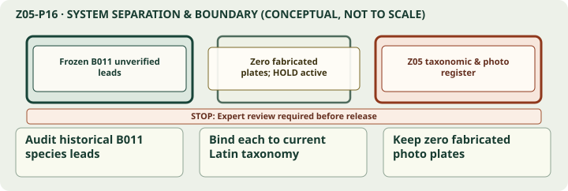

Z05-P16 · Wild foods and poisonous lookalikes · Adapted historical material
Reconciling Historical B011 Botanical and Fungal Atlas Leads
Integrate historical B011 botanical and fungal lead pointers cleanly under modern P19-A/B voucher, rights, and consumption HOLD gates.
When it applies · Editorial lineage bridging frozen Track B B011 leads to the Z05 atlas.
Equipment · Frozen B011 crosswalk record, z05-taxonomic-register.tsv, photo-requirements.tsv.

Actions
- Preserve the historical B011 crosswalk finding accurately: zero diagnostic atlas specimen plates were acquired in B011—only preliminary research leads existed.[B01, B02]
- Map relevant Upper Midwest taxa into the controlled Z05 taxonomic register with accepted binomials, authorities, lookalikes, and open authentic diagnostic photography requirements.[B02, B03, B05]
- Maintain permanent WITHHELD_HOLD consumption status and zero fabricated specialist approvals across every B011-linked and newly authored Z05 profile.[B24]
Failure recognition · Treating historical lead spreadsheets as verified field identification plates bypasses taxonomy, lookalike screening, and image rights.[B02, B24]
Verify · Every B011 lead is traceable, cleanly separated from acquired imagery, and governed by Z05 taxonomic and HOLD gates.[B02, B24]
Stop or change course · Stop promoting any B011-linked species profile to approved publication without verified diagnostic photos and qualified human sign-off.[B02, B24]
Evidence and editorial notes
- B01 · Bell Museum (UMN) · Minnesota Biodiversity Atlas (Current web edition)
- Section: Minnesota Biodiversity Atlas regional occurrence and specimen data · Conditions: Documenting regional plant and fungal distribution in Minnesota
Support: Regional atlas records establish verified county-level occurrences and phenology windows for Minnesota plants and fungi.
Limitations: Occurrence maps confirm regional presence only; they never confirm a field specimen identity or consumption suitability. · Conflicting evidence: None noted.
Editorial note: Anchors Z05 Minnesota regional taxonomy. · Specialist reviewer: Bell Museum / regional botanist
Primary source · checked 2026-11-25
Current assessment · A04-B01 (2026-11-25) · Reopened: earlier closure narrowed (A04): A portal links individual records. Only dated matched vouchers can establish a reported collection. Unqualified occurrence certainty and general phenology windows exceed scope. Limits: Specialist review PENDING (Bell Museum / regional botanist); publication HOLD. All release decisions pending. - B02 · Bell Museum (UMN) · Bell Museum Specimen Collections Portal (Current web edition)
- Section: Curated herbarium and fungarium voucher specimen standards · Conditions: Corroborating species traits against documented physical vouchers
Support: Curated herbarium and fungarium vouchers link accepted scientific names, collection locality, habitat, and morphology to verifiable specimens.
Limitations: Image-search labels and crowd-sourced guesses cannot substitute for vouchered keys and qualified taxonomic review. · Conflicting evidence: None noted.
Editorial note: Core P19-A voucher discipline. · Specialist reviewer: Herbarium / fungarium curator
Primary source · checked 2026-11-25 - B03 · USDA NRCS · PLANTS Database: Accepted Taxa and Regional Distribution (Current web edition)
- Section: Accepted botanical nomenclature, authorities, and synonyms · Conditions: Standardizing plant scientific names across regional floras
Support: Tracking accepted Latin binomials, taxonomic authorities, and legacy synonyms prevents dangerous common-name confusion.
Limitations: Common names like hemlock, nightshade, elder, or wild carrot refer to unrelated toxic and non-toxic taxa across regions. · Conflicting evidence: None noted.
Editorial note: Prevents common-name misidentification. · Specialist reviewer: Plant taxonomist
Primary source · checked 2026-11-25
Current assessment · A04-B03 (2026-11-25) · Reopened: earlier closure narrowed (A04): Name crosswalk is a documentation method. A catalog search cannot establish a name as current across treatments or prevent a field misidentification. Limits: Specialist review PENDING (Plant taxonomist); publication HOLD. All release decisions pending. - B05 · MyCoPortal · North American Fungal Voucher Collections Portal (Current web edition)
- Section: Separate fungal voucher collections and microscopic/macro traits · Conditions: Documenting macrofungi across North American collections
Support: Fungal taxonomy requires distinct anatomical schemas (cap, gills/pores/teeth, attachment, ring, volva, spore print, substrate, and often microscopy).
Limitations: Fungal species complexes frequently overlap macroscopically; photos alone cannot confirm edibility. · Conflicting evidence: None noted.
Editorial note: Keeps botanical and fungal schemas separate. · Specialist reviewer: Qualified mycologist
Primary source · checked 2026-11-25
Current assessment · A04-B05 (2026-11-25) · Open: support partial or missing (A04): Records can supply vouchers. No universal schema covers all fungi. Need taxon-specific monograph, angle and microscopy requirements. Limits: Specialist review PENDING (Qualified mycologist); publication HOLD. All release decisions pending. - B24 · National Capital Poison Center · Mushroom poisoning: prevention and response (Current reference)
- Section: Prevention tips and what to do after ingestion · Conditions: Wild mushroom recognition and suspected ingestion
Support: Lookalikes can fool observers. Avoid eating wild fungi on unverified identification and seek poison-centre advice promptly after suspected ingestion.
Limitations: Reject folk tests and generated-image clearance as an editorial restriction. Preparation cannot substitute for poison risk or identification review. · Conflicting evidence: Conditions are recorded in the A03 audit.
Editorial note: Enforces Z05 fail-closed edibility rule. · Specialist reviewer: Botanist, mycologist, and clinical toxicologist
Primary source · checked 2026-11-25
Source lineage · Adapted historical material (B011 atlas archive lead register) · Classification · Adapted historical material.